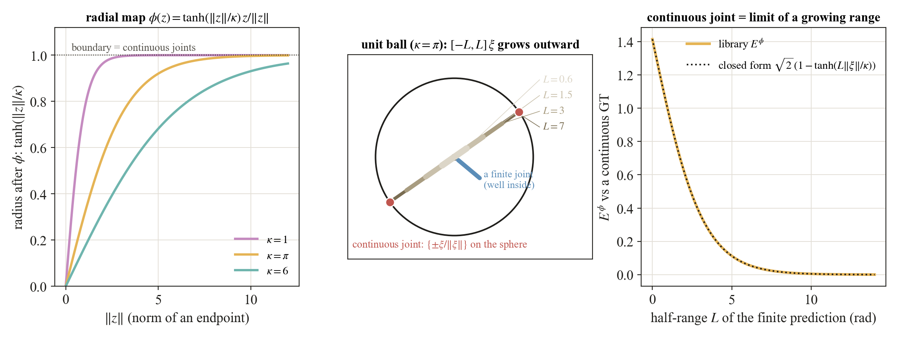

4.6
Continuous joints and the compactification Eϕ

A continuous joint has l± = ±∞, so its endpoint twists are at infinity and the flat distance is undefined. The radial map ϕ(z) = tanh(‖z‖/κ) z/‖z‖ pulls all of se(3) into the open unit ball and sends the continuous joint to the antipodal boundary pair {±ξ/‖ξ‖}, the axis direction up to sign. Then Eϕ(J₁, J₂) = E({ϕ(z₁⁻), ϕ(z₁⁺)}, {ϕ(z₂⁻), ϕ(z₂⁺)}). Against a continuous ground truth with unit screw, a finite prediction [−L, L] on the same screw scores √2 (1 − tanh(L‖ξ‖/κ)): it starts at √2, the distance from the welded joint, and decays to zero. A continuous joint is literally the limit of a growing range, with no formula switch.
What κ does. It is a pure horizontal dilation of every curve, with half decay near L‖ξ‖ ≈ 0.55 κ. The default κ = π keeps ranges up to a full turn in the responsive part of tanh, and on the benchmark's finite ground-truth joints none saturate (95th percentile radius 0.78 at worst).
Finite joints may also be compactified. The map is defined on all of se(3), so Eϕ is the one score that covers every joint type at once. That is why the benchmark's common column is Eαϕ. Raw EB is reported only on pairs whose limits are both finite.